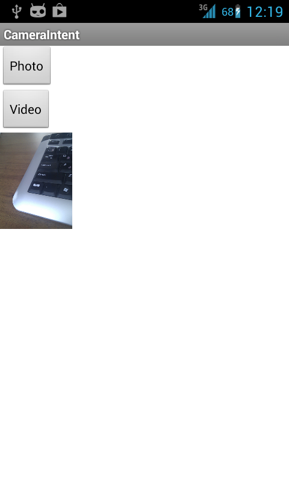

В этом уроке:
- получаем фото и видео, используя системное приложение
Открываем серию уроков по работе с камерой. И начнем с самого простого. Если вам в приложении необходимо сделать снимок или снять видео, вовсе необязательно для этого создавать отдельное Activity и работать в нем с объектом Camera. Можно использовать уже существующее в системе приложение.
Для этого ваше приложение должно отправить Intent с action = MediaStore.ACTION_IMAGE_CAPTURE (фото) или MediaStore.ACTION_VIDEO_CAPTURE (видео) и ждать ответ. Т.е. надо использовать методы startActivityForResult и onActivityResult.
Также, в этот Intent вы можете поместить желаемый путь к файлу и туда будет сохранен результат работы камеры. Для этого в Intent необходимо добавить Uri с ключом MediaStore.EXTRA_OUTPUT.
Напишем простое приложение, демонстрирующее эти возможности.
Создадим проект:
Project name: P1311_CameraIntent
Build Target: Android 4.0
Application name: CameraIntent
Package name: ru.startandroid.develop.p1311cameraintent
Create Activity: MainActivity
Добавим строки в strings.xml:
<string name="photo">Photo</string>
<string name="video">Video</string>
Экран main.xml:
<?xml version="1.0" encoding="utf-8"?>
<RelativeLayout
xmlns:android="http://schemas.android.com/apk/res/android"
android:layout_width="match_parent"
android:layout_height="match_parent">
<Button
android:id="@+id/btnPhoto"
android:layout_width="wrap_content"
android:layout_height="wrap_content"
android:onClick="onClickPhoto"
android:text="@string/photo">
</Button>
<Button
android:id="@+id/btnVideo"
android:layout_width="wrap_content"
android:layout_height="wrap_content"
android:layout_below="@+id/btnPhoto"
android:onClick="onClickVideo"
android:text="@string/video">
</Button>
<ImageView
android:id="@+id/ivPhoto"
android:layout_width="wrap_content"
android:layout_height="wrap_content"
android:layout_below="@+id/btnVideo">
</ImageView>
</RelativeLayout>На экране только кнопки для получения фото и видео, и ImageView, в котором будем отображать полученное фото.
MainActivity.java:
package ru.startandroid.develop.p1311cameraintent;
import java.io.File;
import android.app.Activity;
import android.content.Intent;
import android.graphics.Bitmap;
import android.net.Uri;
import android.os.Bundle;
import android.os.Environment;
import android.provider.MediaStore;
import android.util.Log;
import android.view.View;
import android.widget.ImageView;
public class MainActivity extends Activity {
File directory;
final int TYPE_PHOTO = 1;
final int TYPE_VIDEO = 2;
final int REQUEST_CODE_PHOTO = 1;
final int REQUEST_CODE_VIDEO = 2;
final String TAG = "myLogs";
ImageView ivPhoto;
@Override
protected void onCreate(Bundle savedInstanceState) {
super.onCreate(savedInstanceState);
setContentView(R.layout.main);
createDirectory();
ivPhoto = (ImageView) findViewById(R.id.ivPhoto);
}
public void onClickPhoto(View view) {
Intent intent = new Intent(MediaStore.ACTION_IMAGE_CAPTURE);
intent.putExtra(MediaStore.EXTRA_OUTPUT, generateFileUri(TYPE_PHOTO));
startActivityForResult(intent, REQUEST_CODE_PHOTO);
}
public void onClickVideo(View view) {
Intent intent = new Intent(MediaStore.ACTION_VIDEO_CAPTURE);
intent.putExtra(MediaStore.EXTRA_OUTPUT, generateFileUri(TYPE_VIDEO));
startActivityForResult(intent, REQUEST_CODE_VIDEO);
}
@Override
protected void onActivityResult(int requestCode, int resultCode,
Intent intent) {
if (requestCode == REQUEST_CODE_PHOTO) {
if (resultCode == RESULT_OK) {
if (intent == null) {
Log.d(TAG, "Intent is null");
} else {
Log.d(TAG, "Photo uri: " + intent.getData());
Bundle bndl = intent.getExtras();
if (bndl != null) {
Object obj = intent.getExtras().get("data");
if (obj instanceof Bitmap) {
Bitmap bitmap = (Bitmap) obj;
Log.d(TAG, "bitmap " + bitmap.getWidth() + " x "
+ bitmap.getHeight());
ivPhoto.setImageBitmap(bitmap);
}
}
}
} else if (resultCode == RESULT_CANCELED) {
Log.d(TAG, "Canceled");
}
}
if (requestCode == REQUEST_CODE_VIDEO) {
if (resultCode == RESULT_OK) {
if (intent == null) {
Log.d(TAG, "Intent is null");
} else {
Log.d(TAG, "Video uri: " + intent.getData());
}
} else if (resultCode == RESULT_CANCELED) {
Log.d(TAG, "Canceled");
}
}
}
private Uri generateFileUri(int type) {
File file = null;
switch (type) {
case TYPE_PHOTO:
file = new File(directory.getPath() + "/" + "photo_"
+ System.currentTimeMillis() + ".jpg");
break;
case TYPE_VIDEO:
file = new File(directory.getPath() + "/" + "video_"
+ System.currentTimeMillis() + ".mp4");
break;
}
Log.d(TAG, "fileName = " + file);
return Uri.fromFile(file);
}
private void createDirectory() {
directory = new File(
Environment
.getExternalStoragePublicDirectory(Environment.DIRECTORY_PICTURES),
"MyFolder");
if (!directory.exists())
directory.mkdirs();
}
}В onCreate мы вызываем свой метод createDirectory, который в папке Pictures создаст папку для наших файлов и поместит соответствующий объект File в переменную directory.
В onClickPhoto и onClickVideo создаем Intent с соответствующим action, добавляем в этот Intent желаемый путь к файлу и отправляем методом startActivityForResult.
В onActivityResult мы ловим результат от приложения камеры. Код громоздкий, т.к. там куча проверок на null. Для фото и для видео я пытаюсь вытащить путь к получившемуся файлу, используя Intent.getData. Кроме этого, для фото я еще пытаюсь вытащить Bitmap с получившимся изображением.
Метод generateFileUri генерирует путь к файлу. Для этого он берет путь из directory, определяет префикс и расширение в зависимости от типа (фото или видео) и использует системное время, как основную часть имени файла. Далее все это конвертируется в Uri и возвращается как результат метода.
Осталось дописать в манифест пару настроек.
<uses-permission android:name="android.permission.WRITE_EXTERNAL_STORAGE"/> - право на запись на SD карту
<uses-feature android:name="android.hardware.camera" /> - ваше приложение в маркете будет видно только устройствам с камерой
Сохраняем все и запускаем приложение.
Жмем Photo – открывается системное приложение камеры. Делаем фото и подтверждаем, что нас устраивает полученный снимок. Нас возвращают в наше приложение.
Смотрим логи:
fileName = /storage/emulated/0/Pictures/MyFolder/photo_1376465721626.jpg
Intent is null
В ответе мы не получили ничего, Intent = null. Но мы указывали путь, куда надо сохранить фото. Идем в папку Pictures/MyFolder и ищем свой файл, он должен там быть.
Попробуем получить видео. Жмем кнопку Video, снимаем ролик и подтверждаем, что он нас устраивает.
Смотрим логи:
fileName = /storage/emulated/0/Pictures/MyFolder/video_1376466182087.mp4
Video uri: file:///storage/emulated/0/Pictures/MyFolder/video_1376466182087.mp4
В случае с видео Intent не null. И его метод getData вернул нам инфу о пути к файлу. Идем в папку и ищем свой файл.
Теперь давайте не будем явно указывать путь для сохранения, и посмотрим, как поведет себя приложение камеры.
Закомментируем соответствующие строки кода:
public void onClickPhoto(View view) {
Intent intent = new Intent(MediaStore.ACTION_IMAGE_CAPTURE);
//intent.putExtra(MediaStore.EXTRA_OUTPUT, generateFileUri(TYPE_PHOTO));
startActivityForResult(intent, REQUEST_CODE_PHOTO);
}
public void onClickVideo(View view) {
Intent intent = new Intent(MediaStore.ACTION_VIDEO_CAPTURE);
//intent.putExtra(MediaStore.EXTRA_OUTPUT, generateFileUri(TYPE_VIDEO));
startActivityForResult(intent, REQUEST_CODE_VIDEO);
}Сохраняем, запускаем приложение.
Жмем Photo, делаем снимок и подтверждаем его, открывается наше приложение и ImageView показывает только что сделанное фото.

Смотрим логи:
Photo uri: null
bitmap 120 x 160
getData вернул null, хотя документация обещала, что там будет путь к файлу. Зато в Intent мы получили Bitmap. Но, как видим, размер его оставляет желать лучшего. Получается, что вообще нет доступа к полноценному сделанному фото. Оно у меня даже не создалось в папке, куда камера по дефолту фоты сохраняет.
Скорее всего, это зависит от версии Android и системного приложения камеры. И у вас вполне может быть другое поведение системы.
Попробуем с видео. Жмем Video, снимаем и подтверждаем ролик.
В логах:
Video uri: content://media/external/video/media/8018
С видео все ок. Камера сохранила видео в папку по умолчанию, и в Intent вернула нам Uri.
Кроме желаемого пути для видео вы можете указать еще некоторые параметры в intent:
MediaStore.EXTRA_VIDEO_QUALITY – качество видео. 0 (плохое) или 1 (хорошее).
MediaStore.EXTRA_DURATION_LIMIT – лимит продолжительности видео в секундах
MediaStore.EXTRA_SIZE_LIMIT – лимит размера получившегося видео в байтах